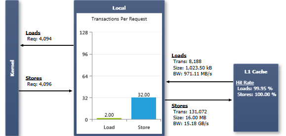

本地内存空间位于设备内存中，因此本地内存访问与全局内存访问一样具有高延迟和低带宽，并且适用于在 内存统计 — 全局内存 实验中讨论过的相同合并访问要求。然而，本地内存的组织方式使得连续的 32 位字由连续的线程 ID 访问。因此，只要 warp 中所有线程访问相同的相对地址（例如，数组变量中的同一索引、结构体变量中的同一成员），访问就是完全合并的。
本地内存访问仅针对某些自动变量发生，详细说明见 CUDA C Programming Guide 的 Variable Type Qualifiers 章节。编译器可能放置在本地内存中的自动变量包括：
此外，某些数学函数的实现路径也可能访问本地内存。运行 内存事务 实验可以告知哪些 SASS 指令引起了本地内存事务。在内存事务实验结果上使用 Source View 的代码关联功能，可以精确定位某个变量在 kernel 编译期间是否被放入了本地内存。另外，使用 --ptxas-options=-v 选项编译时，编译器会报告每个 kernel 的本地内存总用量（lmem）。
在计算能力 2.x 及以上的设备上，所有本地内存访问都始终在 L1 和 L2 中缓存。本实验的输出展示了 kernel 执行期间产生的所有本地内存流量。
图表 Load/Store Requests（请求数）等于执行的本地内存指令数量。当一个 warp 执行一条访问本地内存的指令时，它会根据每个线程访问的字大小以及线程间内存地址的分布，将 warp 内各线程的内存访问合并为一个或多个 Memory Transactions（内存事务）。一般而言，需要的事务越多，除了线程访问的字以外还要额外传输的未使用字也越多，相应地降低了指令吞吐量。此外，每个内存事务都要求该汇编指令被重复发射；如果完成一个 warp 的请求需要多于一个事务，就会导致指令重放。关于指令重放及其性能影响的更多细节，可参阅 指令统计 实验中的相关介绍。 Transactions Per Request（每请求事务数）图表分别针对加载和存储操作，显示每条执行的本地内存指令所需的平均 L1 事务数。数值越低越好；对于一个完整 warp 的单次本地内存操作，目标是 4 字节访问 1 个事务、8 字节访问 2 个事务、16 字节访问 4 个事务。warp 与 L1 缓存之间本地内存流量的 Transaction Size（事务大小）等于一整条 L1 缓存行的大小；一条 L1 缓存行为 128 字节。注意，无论 warp 中的线程是请求了缓存行中的全部数据还是仅请求了其子集，都会传输一整条缓存行。 |
--ptxas-options=-v 选项编译 kernel，并重点关注有多少寄存器需要被溢出。尽量减少溢出的寄存器数量，以减少本地内存操作的总数。
NVIDIA GameWorks Documentation Rev. 1.0.150630 ©2015. NVIDIA Corporation. All Rights Reserved.